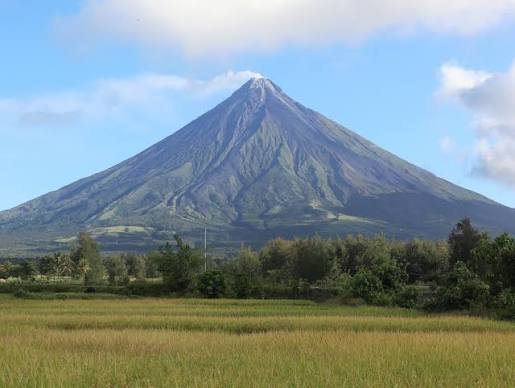
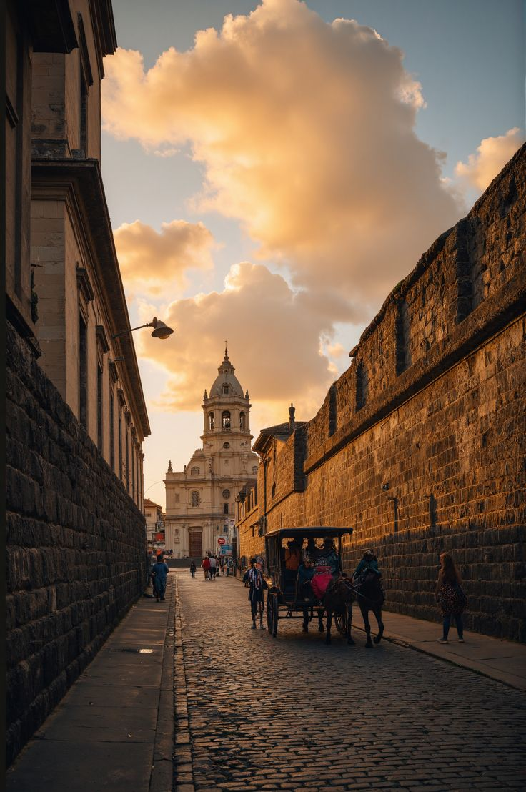

TOURIST SPOT
| HOME | PLACE | FOOD |
|---|
LUZON
 Mayon Volcano. Mayon Volcano is an active stratovolcano in Albay province, Philippines. Rising 2,462 meters above the Albay Gulf, it is globally renowned for its near-perfect symmetrical cone. | Located in the Cordillera mountain range, the Banaue Rice Terraces are a breathtaking "living cultural landscape" carved into the mountainsides over 2,000 years ago. | Rizal Park, is a historic 58-hectare urban park located in the heart of Philippines. It is a premier cultural landmark where the country's national hero, Dr. José Rizal, was executed in 1896 |  Intramuros.Known as the "Walled City," Intramuros is the historic heart of Metro Manila. It offers a deep dive into the Spanish colonial era of the Philippines. | Known as the "Summer Capital of the Philippines," Baguio provides a refreshing, pine-scented alpine retreat due to its high elevation and cool climate. |
VISAYAS
 Chocolate Hills.
Chocolate Hills.The Chocolate Hills are a geological wonder in Bohol, Philippines, featuring over 1,200 cone-shaped hills spread across 50 square kilometers. | Magellan's Cross is a historic Christian landmark in Cebu City, Philippines, planted by Ferdinand Magellan's expedition on April 21, 1521. | the oldest and smallest triangular bastion fort in the Philippines, Built by Spanish conquistadors in 1565 under Miguel López de Legazpi. |  Boracay.
Boracay.Boracay is located in the Visayas, specifically in the Western Visayas region as part of the province of Aklan. | Located in Badian, Cebu, Kawasan Falls is a famous three-tiered waterfall celebrated for its striking turquoise waters and lush jungle surroundings. |
MINDANAO
Mount Apo is the highest peak in the Philippines, towering 2,954 meters (9,692 ft) above sea level, Located on Mindanao island at the borders of Davao City, Davao del Sur. | Tinuy-an Falls, famously dubbed the "Niagara Falls of the Philippines," is a majestic 3-tier, 55-meter-high and 95-meter-wide waterfall located in Barangay Borboanan, Bislig City, Surigao del Sur. | The Philippine Eagle Center is a world-renowned conservation and breeding facility dedicated to saving the critically endangered national bird of the Philippines. | Tinago Falls is a waterfall on the Agus River, located in the town of Linamon, Lanao del Norte in the northern part of the Philippine island of Mindanao. | The Davao Riverfront Crocodile Park & Zoo is a premier wildlife sanctuary and educational destination located in Davao City. |